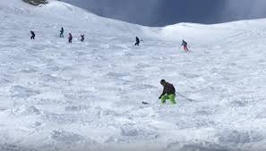
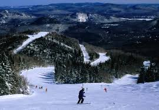
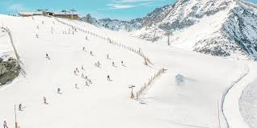

Basic Ski Knowledge
When you're starting out in skiing, having basic knowledge can significantly enhance your experience. To get into your skis, begin by finding a flat area. Lay your skis parallel on the ground and use your poles for support as you sit down. Once you're stable, slide your feet into the ski bindings, ensuring they're securely fastened. It’s important to keep your body horizontal as you get in; this will help you maintain balance. As you start to ski, you'll learn to control your speed with the classic techniques of "pizza" and "french fries." Making a wedge shape with your skis (pizza) helps you slow down, while positioning them parallel (french fries) allows for faster movement. Taking lessons from a qualified instructor can greatly accelerate your learning curve, providing personalized tips and guidance. Remember to take it slow at first—begin on a bunny slope to build confidence and skill. With practice, you'll find that these foundational techniques will make your skiing experience both enjoyable and safe.
Ski Safety & Symbols
Ski safety is paramount on the slopes, and understanding the various symbols and guidelines can help ensure a safe experience. Always be mindful of your speed; going too fast can compromise your control and increase the risk of accidents. Pay attention to the signs around you, as they provide crucial information about slope levels and safety guidelines. For example, trails are categorized by difficulty: bunny slopes are perfect for beginners, while green runs offer a gentle introduction for new skiers. Blue runs present a moderate challenge, while black diamonds indicate steep and more advanced terrain. Double black diamonds are reserved for expert skiers, featuring the most difficult conditions. Additionally, glade skiing—navigating through trees—should be avoided by beginners due to the increased risks it poses. Remember that the skiers in front of you have the right of way, so maintain a safe distance and be prepared to yield. Ski patrol is there to assist and ensure everyone adheres to safety protocols, so don't hesitate to reach out to them if you need help or guidance. By staying aware and following the rules, you can enjoy a safer skiing experience.
Why Ski?
Skiing offers so many benefits that make it a fantastic winter activity. First and foremost, it's an excellent form of exercise that engages your entire body, helping to build strength, endurance, and balance while burning calories. Being outdoors in the cold can also be invigorating, boosting your mood and providing a refreshing contrast to indoor environments. Skiing is a wonderful way to bond with family and friends. The stunning mountain landscapes are breathtaking. Additionally, skiing encourages you to unplug from daily distractions, promoting mindfulness and a greater appreciation for the outdoors. Whether you're racing down a slope or enjoying a leisurely ride on a chairlift, skiing is not just a sport—it's a lifestyle that enriches your physical health and strengthens social connections.
Black Diamond
Blue Slope
Green Slope
